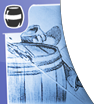
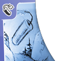
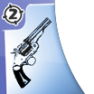
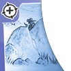

Mustang
Khi bạn có ngựa Mustang trước mặt, những người khác “nhìn” bạn ở khoảng cách xa thêm 1,
nên họ cần súng có tầm bắn xa hơn mới bắn được bạn.
Tuy vậy, bạn vẫn nhìn những người khác ở khoảng cách bình thường!

Barrel
Barrel cho phép bạn “rút bài!” khi bạn là mục tiêu của một phát

:
nếu bạn lật được lá có dấu

, phát bắn trượt [

];
nếu không, mọi chuyện diễn ra bình thường.
Khi có người bắn bạn, Barrel cho bạn thêm một cơ hội trước khi phải dùng bài trên tay!

Jail
Đánh lá này để bỏ tù một người chơi bất kỳ (trừ Cảnh sát trưởng).
Nếu đang ở tù, bạn phải “rút bài!” trước khi bắt đầu lượt:
nếu lật được lá có dấu
, bạn ra tù
và chơi lượt như bình thường; nếu không, bạn mất lượt.

Dynamite
Đặt lá này trước mặt bạn: Dynamite sẽ nằm đó trọn một vòng. Khi bắt đầu lượt kế tiếp
(lúc Dynamite đang ở trước mặt bạn), bạn phải “rút bài!”: lật được dấu
thì Dynamite nổ (bạn mất 3 máu); nếu không, Dynamite được chuyển sang người kế tiếp.

Scope
Khi bạn có Scope trước mặt, bạn “nhìn” những người khác ở khoảng cách gần hơn 1.
Điều này áp dụng cho mọi lá bài tính theo khoảng cách, kể cả súng của bạn.
Tuy vậy, những người khác vẫn nhìn bạn ở khoảng cách bình thường!

Schofield
Khẩu súng này tăng tầm bắn của bạn lên 2.
Mỗi lúc bạn chỉ có một khẩu súng: dùng súng mới thì súng cũ bị bỏ.

Remington
Khẩu súng này tăng tầm bắn của bạn lên 3.
Mỗi lúc bạn chỉ có một khẩu súng: dùng súng mới thì súng cũ bị bỏ.

Rev. Carabine
Khẩu súng này tăng tầm bắn của bạn lên 4.
Mỗi lúc bạn chỉ có một khẩu súng: dùng súng mới thì súng cũ bị bỏ.

Winchester
Khẩu súng này tăng tầm bắn của bạn lên 5.
Mỗi lúc bạn chỉ có một khẩu súng: dùng súng mới thì súng cũ bị bỏ.

Volcanic
Khi có lá này trước mặt, bạn được đánh bao nhiêu lá BANG! cũng được trong lượt của mình.
Các lá BANG! này có thể nhắm cùng một người hoặc nhiều người khác nhau, nhưng tầm bắn chỉ là 1.

Hideout (DODGE CITY)
Giống MUSTANG, nhưng bạn có thể có cả hai!

Binocular (DODGE CITY)
Giống SCOPE, nhưng bạn có thể có cả hai!